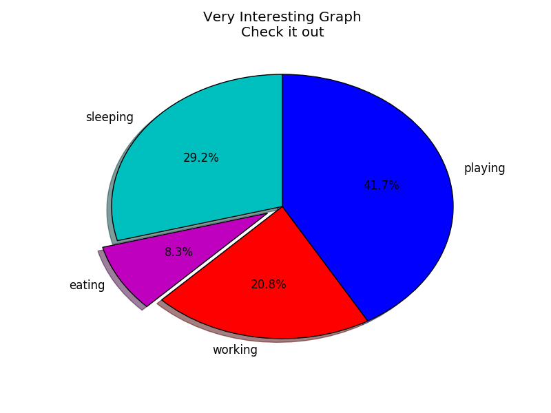

Matplotlib demo app.
import matplotlib.pyplot as plt
slices = [7,2,5,10]
activities = ['sleeping','eating','working','playing']
cols = ['c','m','r','b']
plt.pie(slices,
labels=activities,
colors=cols,
startangle=90,
shadow= True,
explode=(0,0.1,0,0),
autopct='%1.1f%%')
plt.title('Very Interesting Graph\nCheck it out')
plt.show()

import matplotlib.pyplot as plt
days = [1,2,3,4,5]
sleeping = [7,8,6,11,7]
eating = [2,3,4,3,2]
working = [7,8,7,2,2]
playing = [8,5,7,8,13]
plt.plot([],[],color='m', label='Sleeping', linewidth=5)
plt.plot([],[],color='c', label='Eating', linewidth=5)
plt.plot([],[],color='r', label='Working', linewidth=5)
plt.plot([],[],color='g', label='Playing', linewidth=5)
plt.stackplot(days, sleeping,eating,working,playing, colors=['m','c','r','g'])
plt.xlabel('Axis X')
plt.ylabel('Axis Y')
plt.title('Very Interesting Graph\nCheck it out')
plt.legend()
plt.show()
import matplotlib.pyplot as plt
import random
import math
import numpy as np
N = 50
x = [n for n in random.sample(range(101), N)]
y = [m for m in random.sample(range(101), N)]
colors = [ [round(random.random(),3) for i in range(3)]
for d in range(N)]
area = [math.pi*(15*random.random())**2 for d in range(N)]
#x = np.random.rand(N)
#y = np.random.rand(N)
#colors = np.random.rand(N,3)
#area = np.pi * (15 * np.random.rand(N))**2
plt.scatter(x, y, label='', color=colors, s=area, alpha=0.5, marker='o')
plt.xlabel('Axis X')
plt.ylabel('Axis Y')
plt.title('Very Interesting Graph\nCheck it out')
plt.legend()
plt.show()
#import matplotlib.pyplot as plt
#plt.rcdefaults()
import numpy as np
import matplotlib.pyplot as plt
import random
people = ('Runner 1', 'Runner 2', 'Runner 3', 'Runner 4', 'Runner 5')
y_pos = np.arange(len(people))
performance = 3 + 10 * np.random.rand(len(people))
error = np.random.rand(len(people))
#colors = np.random.rand(len(people),3)
colors = random.sample(['b','g','r','c','m','y','k'], len(people))
# matplotlib.pyplot.barh(bottom, width, height=0.8,
# left=None, hold=None, **kwargs)
plt.barh(y_pos, performance, xerr=error, height=0.5, align='center',
color=colors, alpha=0.4)
plt.yticks(y_pos, people)
plt.xlabel('Performance')
plt.title('How fast did they run today?')
plt.show()
import numpy as np
import matplotlib.pyplot as plt
N = 5
menMeans = (20, 35, 30, 35, 27)
womenMeans = (25, 32, 34, 20, 25)
menStd = (2, 3, 4, 1, 2)
womenStd = (3, 5, 2, 3, 3)
ind = np.arange(N) # the x locations for the groups
width = 0.35 # the width of the bars
p1 = plt.bar(ind, menMeans, width, color='b', ecolor='w',
align='center', yerr=menStd)
p2 = plt.bar(ind, womenMeans, width, color='c',ecolor='m', align='center',
bottom=menMeans, yerr=womenStd)
plt.ylabel('Scores')
plt.title('Scores by group and gender')
plt.xticks(ind , ('G1', 'G2', 'G3', 'G4', 'G5')) # +width/2. if align='edge'
plt.yticks(np.arange(0, 81, 10))
plt.legend((p1[0], p2[0]), ('Men', 'Women'))
plt.show()
import matplotlib.pyplot as plt
import numpy as np
import urllib
import datetime as dt
import matplotlib.dates as mdates
def bytespdate2num(fmt, encoding='utf-8'):
strconverter = mdates.strpdate2num(fmt)
def bytesconverter(b):
s = b.decode(encoding)
return strconverter(s)
return bytesconverter
def graph_data(stock):
fig = plt.figure()
ax1 = plt.subplot2grid((1,1), (0,0))
stock_price_url = 'http://chartapi.finance.yahoo.com/instrument/1.0/'
+stock+'/chartdata;type=quote;range=10y/csv'
source_code = urllib.request.urlopen(stock_price_url).read().decode()
stock_data = []
split_source = source_code.split('\n')
for line in split_source:
split_line = line.split(',')
if len(split_line) == 6:
if 'values' not in line and 'labels' not in line:
stock_data.append(line)
date, closep, highp, lowp, openp, volume = np.loadtxt(stock_data,
delimiter=',',
unpack=True,
converters={0: bytespdate2num('%Y%m%d')})
ax1.plot_date(date, closep,'-', label='Price')
ax1.plot([],[],linewidth=5, label='Loss', color='r',alpha=0.5)
ax1.plot([],[],linewidth=5, label='Gain', color='g',alpha=0.5)
ax1.fill_between(date, closep, closep[0],where=(closep > closep[0]), facecolor='g', alpha=0.5)
ax1.fill_between(date, closep, closep[0],where=(closep < closep[0]), facecolor='r', alpha=0.5)
for label in ax1.xaxis.get_ticklabels():
label.set_rotation(45)
ax1.grid(True)#, color='g', linestyle='-', linewidth=5)
ax1.xaxis.label.set_color('c')
ax1.yaxis.label.set_color('r')
ax1.set_yticks([0,10,20,30,40])
plt.xlabel('Date')
plt.ylabel('Price')
plt.title(stock)
plt.legend()
plt.subplots_adjust(left=0.09, bottom=0.20, right=0.94, top=0.90,
wspace=0.2, hspace=0)
plt.show()
graph_data('EBAY')
import matplotlib.pyplot as plt
import matplotlib.dates as mdates
import matplotlib.ticker as mticker
from matplotlib.finance import candlestick_ohlc
from matplotlib import style
import numpy as np
import urllib
import datetime as dt
def bytespdate2num(fmt, encoding='utf-8'):
strconverter = mdates.strpdate2num(fmt)
def bytesconverter(b):
s = b.decode(encoding)
return strconverter(s)
return bytesconverter
def graph_data(stock):
#print(plt.style.available)
#['bmh', 'dark_background', 'ggplot', 'fivethirtyeight', 'grayscale']
#style.use('bmh')
fig = plt.figure()
ax1 = plt.subplot2grid((1,1), (0,0))
## ax1 = plt.subplot2grid((6,1), (0,0), rowspan=1, colspan=1)
#6 tall and 1 wide, 0,0 the starting point of the top left corner
## ax1 = fig.add_subplot(221) #2 tall, 2 wide, plot number 1
stock_price_url = 'http://chartapi.finance.yahoo.com/instrument/1.0/'
+stock+'/chartdata;type=quote;range=1m/csv'
source_code = urllib.request.urlopen(stock_price_url).read().decode()
stock_data = []
split_source = source_code.split('\n')
for line in split_source:
split_line = line.split(',')
if len(split_line) == 6:
if 'values' not in line and 'labels' not in line:
stock_data.append(line)
date, closep, highp, lowp, openp, volume = np.loadtxt(stock_data,
delimiter=',',
unpack=True,
converters={0: bytespdate2num('%Y%m%d')})
x = 0
y = len(date)
ohlc = []
while x < y:
append_me = date[x], openp[x], highp[x], lowp[x], closep[x], volume[x]
ohlc.append(append_me)
x+=1
candlestick_ohlc(ax1, ohlc, width=0.4, colorup='#77d879', colordown='#db3f3f')
for label in ax1.xaxis.get_ticklabels():
label.set_rotation(45)
ax1.xaxis.set_major_formatter(mdates.DateFormatter('%Y-%m-%d'))
ax1.xaxis.set_major_locator(mticker.MaxNLocator(10))
ax1.grid(True)
## ax1.annotate('Bad News!',(date[9],highp[9]),
## xytext=(0.8, 0.9), textcoords='axes fraction',
## arrowprops = dict(facecolor='grey',color='grey')
## # Text placement example:
## font_dict = {'family':'serif',
## 'color':'darkred',
## 'size':15}
## ax1.text(date[10], closep[1],'Text Example', fontdict=font_dict)
## bbox_props = dict(boxstyle='round',fc='w', ec='k',lw=1
## ax1.annotate(str(closep[-1]), (date[-1], closep[-1]),
## xytext = (date[-1]+4, closep[-1]), bbox=bbox_props)
plt.xlabel('Date')
plt.ylabel('Price')
plt.title(stock)
plt.legend()
plt.subplots_adjust(left=0.09, bottom=0.20, right=0.94, top=0.90, wspace=0.2, hspace=0)
plt.show()
graph_data('EBAY')
import matplotlib.pyplot as plt
import matplotlib.dates as mdates
import matplotlib.ticker as mticker
from matplotlib.finance import candlestick_ohlc
from matplotlib import style
import numpy as np
import urllib
import datetime as dt
style.use('fivethirtyeight')
print(plt.style.available)
print(plt.__file__)
MA1 = 10
MA2 = 30
def moving_average(values, window):
weights = np.repeat(1.0, window)/window
smas = np.convolve(values, weights, 'valid')
return smas
def high_minus_low(highs, lows):
return highs-lows
def bytespdate2num(fmt, encoding='utf-8'):
strconverter = mdates.strpdate2num(fmt)
def bytesconverter(b):
s = b.decode(encoding)
return strconverter(s)
return bytesconverter
def graph_data(stock):
fig = plt.figure(facecolor='#f0f0f0')
ax1 = plt.subplot2grid((6,1), (0,0), rowspan=1, colspan=1)
plt.title(stock)
plt.ylabel('H-L')
ax2 = plt.subplot2grid((6,1), (1,0), rowspan=4, colspan=1, sharex=ax1)
plt.ylabel('Price')
ax2v = ax2.twinx()
ax3 = plt.subplot2grid((6,1), (5,0), rowspan=1, colspan=1, sharex=ax1)
plt.ylabel('MAvgs')
stock_price_url = 'http://chartapi.finance.yahoo.com/instrument/1.0/'
+stock+'/chartdata;type=quote;range=1y/csv'
source_code = urllib.request.urlopen(stock_price_url).read().decode()
stock_data = []
split_source = source_code.split('\n')
for line in split_source:
split_line = line.split(',')
if len(split_line) == 6:
if 'values' not in line and 'labels' not in line:
stock_data.append(line)
date, closep, highp, lowp, openp, volume = np.loadtxt(stock_data,
delimiter=',',
unpack=True,
converters={0: bytespdate2num('%Y%m%d')})
x = 0
y = len(date)
ohlc = []
while x < y:
append_me = date[x], openp[x], highp[x], lowp[x], closep[x], volume[x]
ohlc.append(append_me)
x+=1
ma1 = moving_average(closep,MA1)
ma2 = moving_average(closep,MA2)
start = len(date[MA2-1:])
h_l = list(map(high_minus_low, highp, lowp))
ax1.plot_date(date[-start:],h_l[-start:],'-', label='H-L')
ax1.yaxis.set_major_locator(mticker.MaxNLocator(nbins=4, prune='lower'))
candlestick_ohlc(ax2, ohlc[-start:], width=0.4, colorup='#77d879', colordown='#db3f3f')
ax2.yaxis.set_major_locator(mticker.MaxNLocator(nbins=7, prune='upper'))
ax2.grid(True)
bbox_props = dict(boxstyle='round',fc='w', ec='k',lw=1)
ax2.annotate(str(closep[-1]), (date[-1], closep[-1]),
xytext = (date[-1]+4, closep[-1]), bbox=bbox_props)
## # Annotation example with arrow
## ax2.annotate('Bad News!',(date[11],highp[11]),
## xytext=(0.8, 0.9), textcoords='axes fraction',
## arrowprops = dict(facecolor='grey',color='grey'))
##
##
## # Font dict example
## font_dict = {'family':'serif',
## 'color':'darkred',
## 'size':15}
## # Hard coded text
## ax2.text(date[10], closep[1],'Text Example', fontdict=font_dict)
ax2v.plot([],[], color='#0079a3', alpha=0.4, label='Volume')
ax2v.fill_between(date[-start:],0, volume[-start:], facecolor='#0079a3', alpha=0.4)
ax2v.axes.yaxis.set_ticklabels([])
ax2v.grid(False)
ax2v.set_ylim(0, 3*volume.max())
ax3.plot(date[-start:], ma1[-start:], linewidth=1, label=(str(MA1)+'MA'))
ax3.plot(date[-start:], ma2[-start:], linewidth=1, label=(str(MA2)+'MA'))
ax3.fill_between(date[-start:], ma2[-start:], ma1[-start:],
where=(ma1[-start:] < ma2[-start:]),
facecolor='r', edgecolor='r', alpha=0.5)
ax3.fill_between(date[-start:], ma2[-start:], ma1[-start:],
where=(ma1[-start:] > ma2[-start:]),
facecolor='g', edgecolor='g', alpha=0.5)
ax3.xaxis.set_major_formatter(mdates.DateFormatter('%Y-%m-%d'))
ax3.xaxis.set_major_locator(mticker.MaxNLocator(10))
ax3.yaxis.set_major_locator(mticker.MaxNLocator(nbins=4, prune='upper'))
for label in ax3.xaxis.get_ticklabels():
label.set_rotation(45)
plt.setp(ax1.get_xticklabels(), visible=False)
plt.setp(ax2.get_xticklabels(), visible=False)
plt.subplots_adjust(left=0.11, bottom=0.24, right=0.90,
top=0.90, wspace=0.2, hspace=0)
## {'lower right': 4, 'upper right': 1, 'lower center': 8,
## 'lower left': 3, 'upper left': 2,
## 'best': 0, 'right': 5, 'center right': 7, 'upper center': 9,
## 'center left': 6, 'center': 10}
ax1.legend()
leg = ax1.legend(loc=2, ncol=2,prop={'size':11})
leg.get_frame().set_alpha(0.4)
ax2v.legend()
leg = ax2v.legend(loc=2, ncol=2,prop={'size':11})
leg.get_frame().set_alpha(0.4)
ax3.legend()
leg = ax3.legend(loc=2, ncol=2,prop={'size':11})
leg.get_frame().set_alpha(0.4)
plt.show()
## fig.savefig('google.png', facecolor=fig.get_facecolor())
graph_data('GOOG')
from mpl_toolkits.mplot3d import axes3d
import matplotlib.pyplot as plt
import numpy as np
from matplotlib import style
style.use('ggplot')
fig = plt.figure()
ax1 = fig.add_subplot(111, projection='3d')
x, y, z = axes3d.get_test_data(0.03)
print(axes3d.__file__)
ax1.plot_wireframe(x,y,z, rstride = 3, cstride = 3)
ax1.set_xlabel('x axis')
ax1.set_ylabel('y axis')
ax1.set_zlabel('z axis')
plt.show()

from mpl_toolkits.mplot3d import axes3d
import matplotlib.pyplot as plt
import numpy as np
from matplotlib import style
style.use('ggplot')
fig = plt.figure()
ax1 = fig.add_subplot(111, projection='3d')
x3 = [1,2,3,4,5,6,7,8,9,10]
y3 = [5,6,7,8,2,5,6,3,7,2]
z3 = np.zeros(10)
dx = np.ones(10)
dy = np.ones(10)
dz = [10,9,8,7,6,5,4,3,2,1]
ax1.bar3d(x3, y3, z3, dx, dy, dz)
ax1.set_xlabel('x axis')
ax1.set_ylabel('y axis')
ax1.set_zlabel('z axis')
plt.show()
from mpl_toolkits.mplot3d import axes3d
import matplotlib.pyplot as plt
from matplotlib import style
style.use('ggplot')
fig = plt.figure()
ax1 = fig.add_subplot(111, projection='3d')
x = [1,2,3,4,5,6,7,8,9,10]
y = [5,6,7,8,2,5,6,3,7,2]
z = [1,2,6,3,2,7,3,3,7,2]
x2 = [-1,-2,-3,-4,-5,-6,-7,-8,-9,-10]
y2 = [-5,-6,-7,-8,-2,-5,-6,-3,-7,-2]
z2 = [1,2,6,3,2,7,3,3,7,2]
ax1.scatter(x, y, z, c='g', marker='o')
ax1.scatter(x2, y2, z2, c ='r', marker='o')
ax1.set_xlabel('x axis')
ax1.set_ylabel('y axis')
ax1.set_zlabel('z axis')
plt.show()

import matplotlib.pyplot as plt
population_ages = [22,11,55,62,45,21,22,34,42,42,4,99,102,
110,120,121,122,130,111,115,112,80,75,65,54,44,43,42,48]
bins = [0,10,20,30,40,50,60,70,80,90,100,110,120,130]
plt.hist(population_ages, bins, histtype='bar', rwidth=0.8,
label='population age distribution')
plt.xlabel('Age')
plt.ylabel('Population Distribution')
plt.title('Interesting Graph\nCheck it out')
plt.legend()
plt.show()
import matplotlib.pyplot as plt
x = [1,2,3]
y = [9,11,10]
x2 = [1,2,3]
y2 = [10,16,14]
plt.plot(x,y,label='First Line',color='red')
plt.plot(x2,y2,label='Second Line',color='blue')
plt.bar([1,3,5,7,9],[5,4,7,9,8],label='Bar 001',color='m')
plt.bar([2,4,6,8,10],[8,6,2,5,6],label='Bar 002',color='c')
plt.xlabel('Axis X')
plt.ylabel('Axis Y')
plt.title('Very Interesting Graph\nCheck it out')
plt.legend()
plt.show()